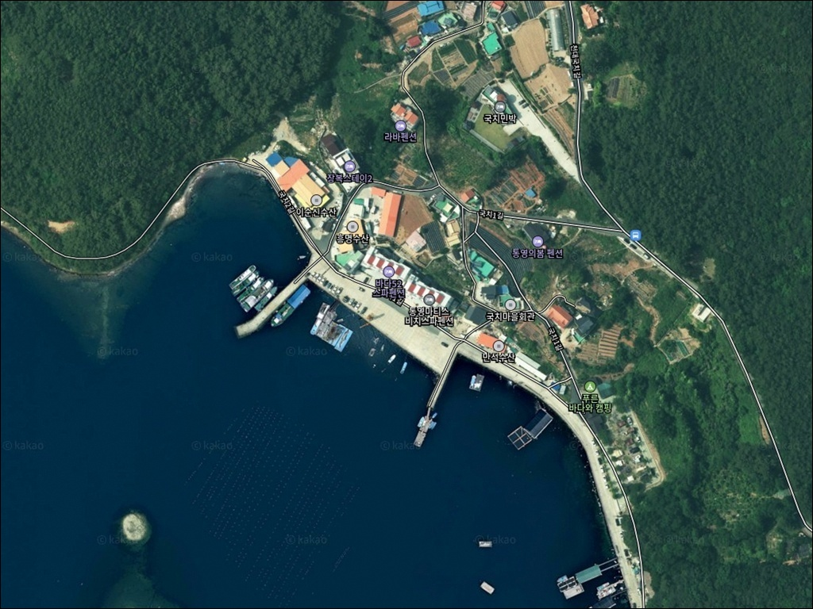
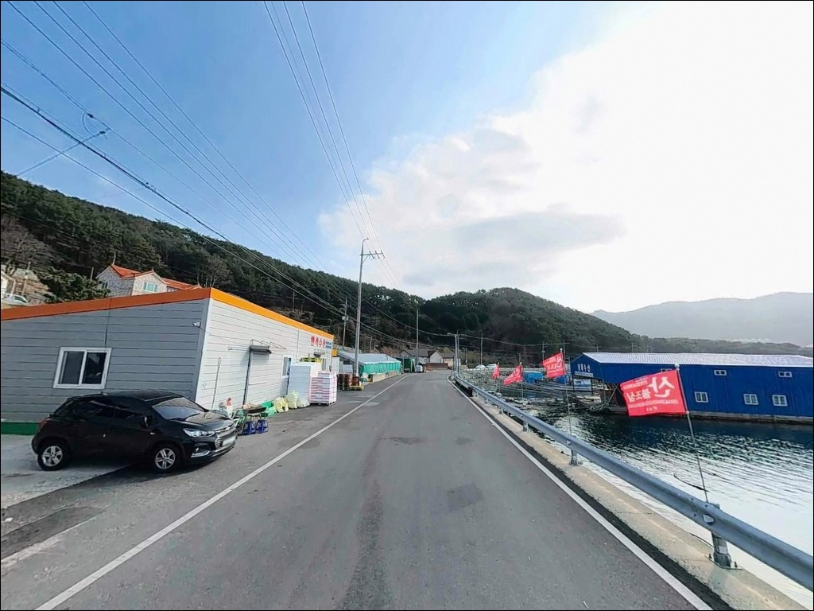
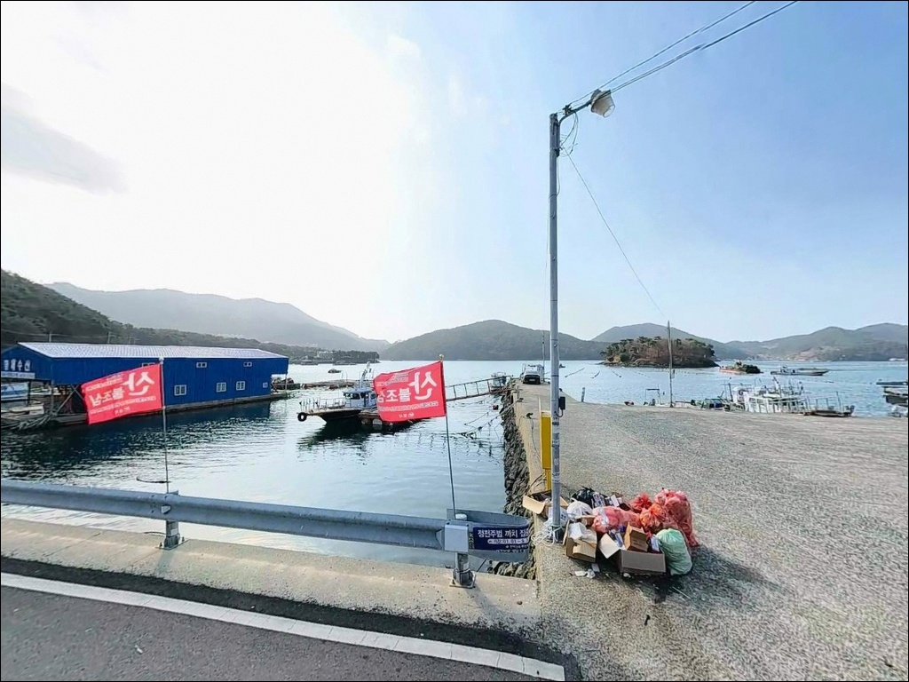
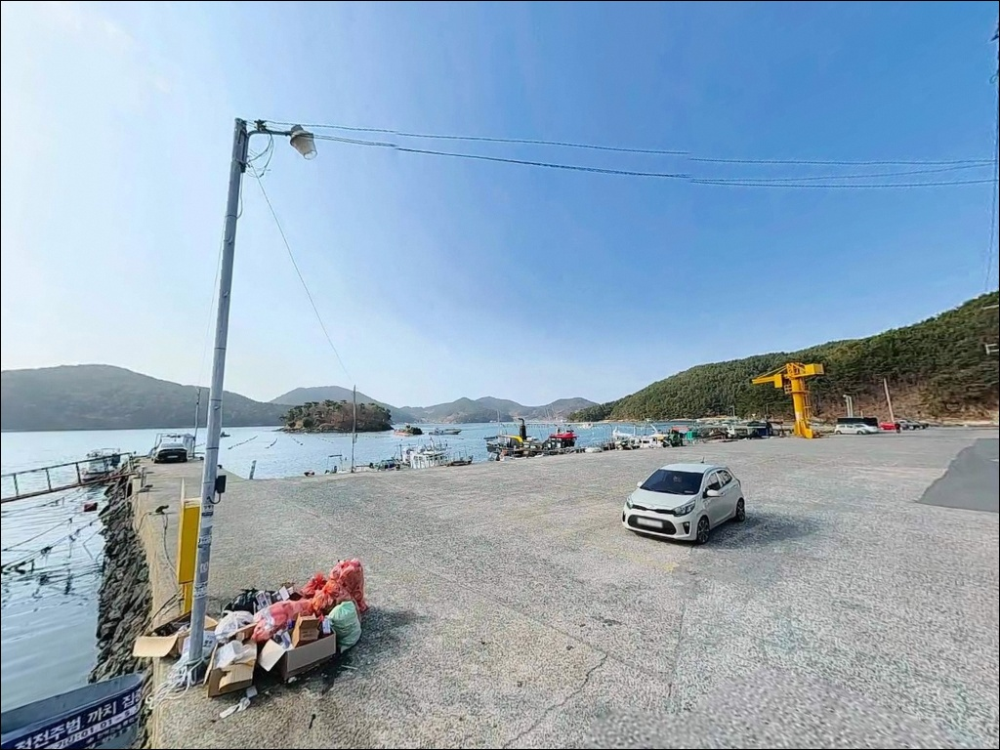
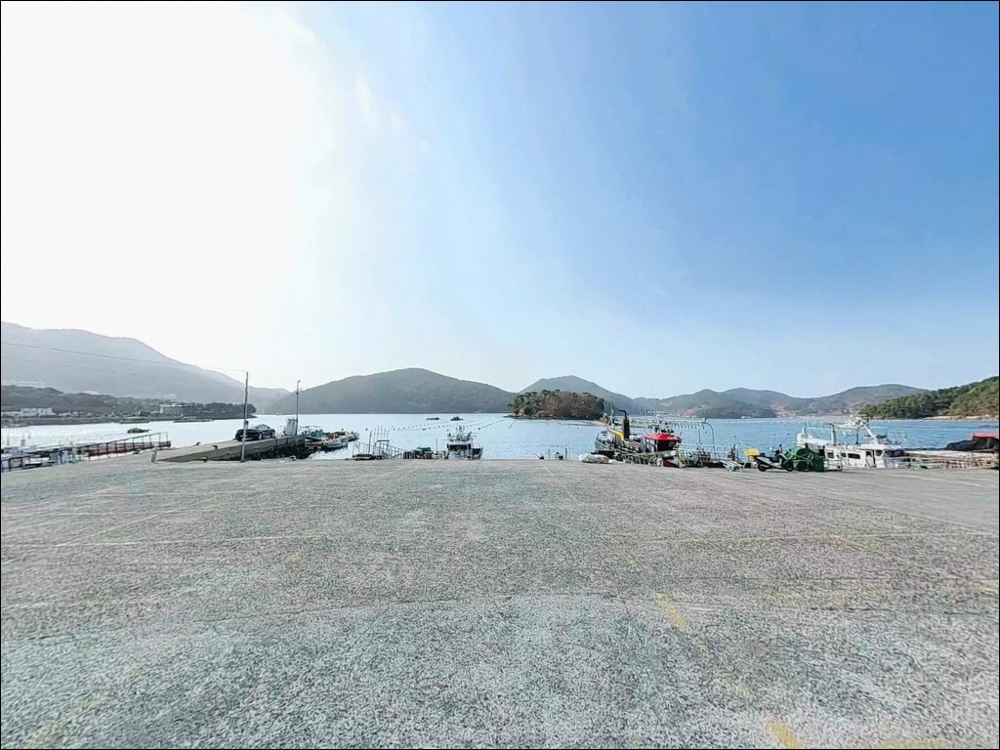
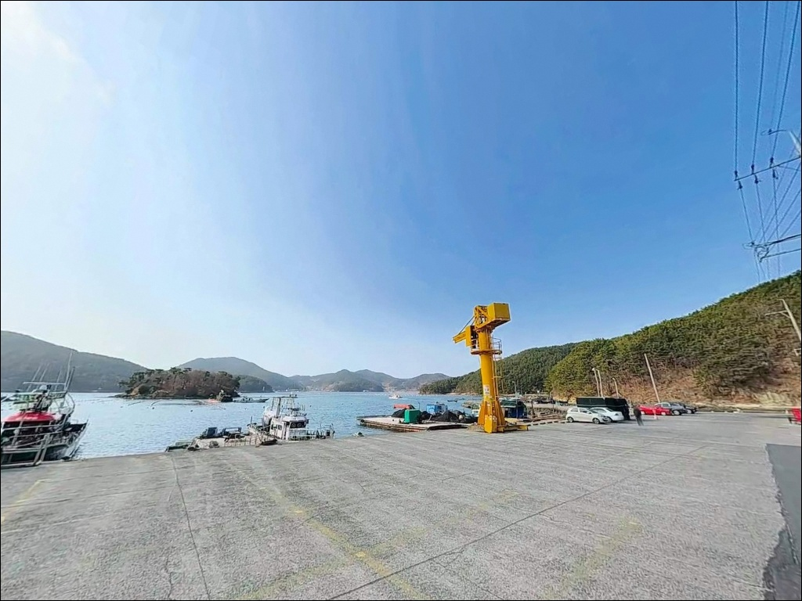
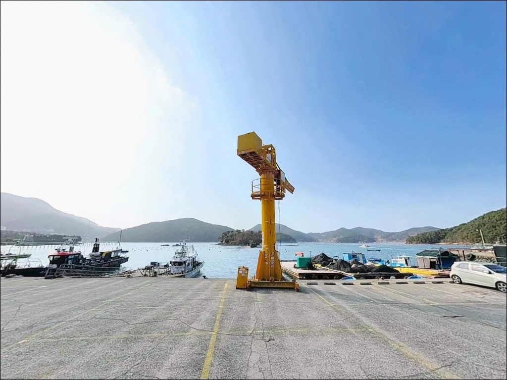
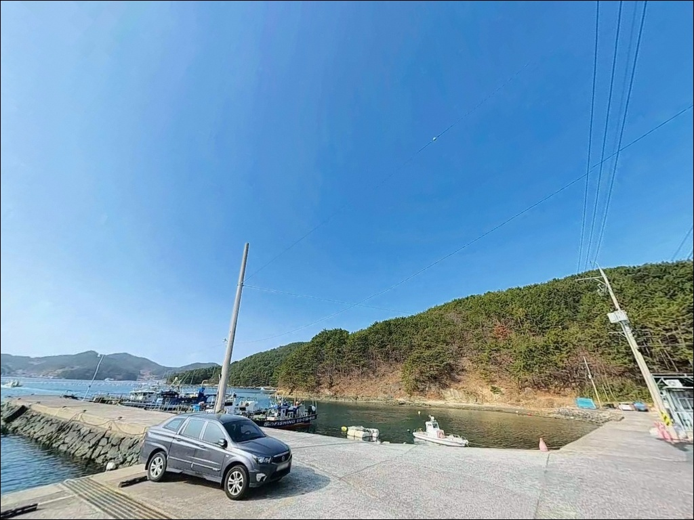
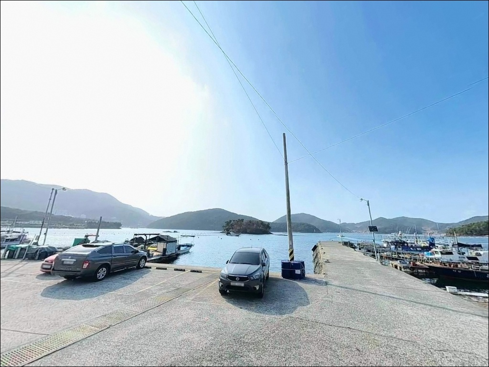

내항 4m 외항 10m 수심 차이로 갈린 통영 인평항 볼락과 에깅 자리
이 페이지에는 광고(제휴 링크 포함)가 있으며, 광고 링크를 통해 구매하면 운영자가 판매 수익 또는 수수료를 받을 수 있습니다. 포인트 사진: 카카오맵 스카이뷰·로드뷰. 이 페이지의 지도·사진 이미지는 카카오맵의 실제 서비스 이미지와 다를 수 있습니다.


포인트 안내
인평항
경남 통영시 인평동 489-5
내만 어항에서 야간 가로등 아래
볼락 루어를 던지다 보면
방파제 직벽 수심이 얼마나 중요한지
바로 체감됩니다.
인평항 내항 직벽은 4~6m,
외방파제 끝단은 8~10m 수심을 유지해
자리 선택만 잘해도 조과 차이가 크게 벌어지는
구조입니다.
통영 도심 강구안에서 서쪽으로
1km 이내에 자리한 인평항은
한려수도 내만 수역에 면한 생활형 어항입니다.
방파제와 선착장, 매립지 공터가 함께 구성되어
차낚(차 바로 옆에서 낚시) 여건이
통영권에서 손에 꼽히는 편입니다.
이 글은 인평항의 진입 동선,
수심별 낚시 여건, 방식별 공략 조건,
차박 체류 가능성을 중심으로 정리합니다.
조황 단정이나 특정 어종 보장은
이 글의 범위에 포함되지 않습니다.

1. 진입 동선과 포인트 접근성
인평항은 통영 시내 생활권과 직접 연결된
포장 도로를 통해 차량 진입이 가능합니다.
왕복 2차선 도로가 항구 끝까지 이어져 있으며
급경사 구간 없이 평탄하게 진입됩니다.
도로 폭은 차량 2대 교행이 가능한 수준으로,
대형 SUV나 카라반 진입에도 부담이 없는
조건입니다.
매립지 내부 도로는 폭이 넓고
회차 공간이 충분히 확보됩니다.
방파제 직선 구간 갓길과
항구 내 광활한 아스팔트 공터 모두
주차 후보로 활용 가능하며,
낚시 자리 바로 뒤에 주차하는 구조가
이 항구의 가장 큰 장점 중 하나입니다.
어선 작업 시간대(이른 아침)에는
어업인 차량이 우선이므로
작업 동선을 막지 않는 자리를
먼저 확인하고 주차하는 것이 기본 매너입니다.

2. 차박 환경과 야간 체류 여건
인평항은 도심 인접 어항이라는 특성상
야간에도 가로등과 민가 불빛이
항구 전역을 밝힙니다.
발판 시야 확보는 매우 양호하고
안전성도 높은 편이지만,
차박 프라이버시는 통영 외곽 포구에 비해
낮은 수준입니다.
야간 차량 통행이 간헐적으로 이어지고
민가 밀집도도 높은 편입니다.
낚시 후 하룻밤 머무는 용도로 활용은 가능하나,
장시간 조용한 차박 환경을 원한다면
통영 산양읍이나 미륵도 해안 방면이
더 적합한 대안입니다.
개인 조명 장비는 항구 가로등이 우수해
필수 수준은 아니지만,
테트라포드 구간과 방파제 외항 쪽으로
이동할 때는 헤드랜턴을 챙기는 편이 좋습니다.


3. 주변 편의시설 및 인프라 현황
인평항은 통영 도심에서 가장 인접한
낚시 포인트 중 하나입니다.
편의점, 식당, 마트, 약국, 주유소가
반경 3km 이내에 집중 분포하며,
통영 중앙시장과 수산물 직판장도
차량 5분 내 거리에 있습니다.
인평항 입구에는 공중화장실이 설치되어 있으며
인근 국치마을 공중화장실도 이용 가능합니다.
낚시 전후 식사나 필요한 소품 보충이
이 권역에서는 어렵지 않습니다.
응급 상황에서도 통영 시내 병원과 약국이
가까워 대응이 빠른 편입니다.
출발 전 부족한 채비를 보충한 뒤
진입하는 방식으로 활용하기 좋은 위치입니다.

4. 방문 전 챙겨야 할 준비사항
인평항은 내만 수역에 위치해
조류 세기가 강하지 않은 편입니다.
그러나 외방파제 끝단은 항 입구 방향 조류를
직접 받는 구조이므로,
바다타임에서 통영 기준 물때를 먼저 확인하고
조류가 움직이는 타이밍에 맞춰
포인트에 들어서는 것이 기본 전략입니다.
외방파제 테트라포드는 크기가 크고
간격이 넓은 구조입니다.
이동 시 실족 사고 위험이 있어
구명조끼 착용은 필수이며,
테트라 위를 무리하게 이동하지 않는 것이
안전의 기본 원칙입니다.
항내 비트(말뚝)와 계류 밧줄이
곳곳에 있으므로 야간 이동 시
헤드랜턴으로 발아래를 확인하며
천천히 움직이는 습관이 필요합니다.
어민 작업 공간과 어구 적재 장소에는
주차하지 않는 것이 기본 매너입니다.

5. 지형 기반 낚시 여건 분석
인평항의 낚시 여건을 결정하는 핵심 요소는
수심의 이중 구조입니다.
내항과 선착장 구간은 수심 4~6m의
콘크리트 직벽 발판으로 구성되고,
외방파제 끝단으로 갈수록
수심이 8~10m 수준까지 깊어집니다.
두 구간의 수심 차이만큼 어울리는
낚시 방식도 달라집니다.
외방파제 외항 쪽에는 테트라포드가 배치된 구간이 있으며
이 구간의 석축 경계면은
에깅과 루어 운용에 핵심이 되는 지점입니다.
조류가 항 입구 방향으로 흐르는 구조로
회유성 어종이 지나는 길목이 형성됩니다.
정조 전후 타이밍에
방파제 콧부리 외항 쪽에 자리를 잡는 것이
이 포인트를 공략하는 기본 방법입니다.
내항 방향은 모래·뻘 혼합 바닥 구조로
조류가 완만하고 파도가 잔잔합니다.
외항 직결형에 비해 변수가 적어
처음 찾는 조사에게도 진입 부담이 낮습니다.
출조 전 최신 조황은 반드시 검색해 보시기 바랍니다.


6. 낚시 방식별 공략 조건이 달라지는 포인트
야간 볼락 라이트게임은
이 포인트에서 가장 접근하기 쉬운 방식입니다.
항구 전역에 고광도 가로등이 설치되어 있어
빛 아래 집어 효과가 강하게 형성됩니다.
0.5~1.5g 지그헤드 채비로
내항 직벽과 석축 경계면을 천천히 탐색하는
방식이 이 포인트 구조에 잘 맞습니다.
에깅은 가을철 이 포인트에서
주목해 볼 만한 방식입니다.
외방파제 구간 테트라포드 주변 석축 경계면과
바닥층을 집중 공략하는 것이 핵심입니다.
문어와 갑오징어 모두 바닥층 지형 변화가 있는
테트라 인접 구간에서 반응이 높은 편입니다.
원투낚시는 내항 방향 사질대를
공략하는 데 적합합니다.
조류가 완만하고 수심이 일정한 내항 구간은
채비를 멀리 보내 바닥을 기다리는 방식이
유효합니다.
노래미, 붕장어, 도다리 계열을
정조 타이밍 전후로 노릴 수 있는 구조입니다.
찌낚시는 외방파제 테트라 인접 구간에서
수직 공략이 가능하며,
내항 입구 완만한 흐름 구간에서도
운용이 가능합니다.
감성돔 계열을 기대해 볼 수 있는
타이밍은 조류가 느려지는
정조 전후입니다.

7. 대안 포인트와 플랜 B 동선
인평항 자리가 여의치 않거나
도심 인접 환경이 부담스럽다면
평림항이 첫 번째 대안입니다.
인평항에서 약 2km 거리에 있으며
방파제 구조가 유사하고
원투낚시 중심의 조과가 확인된 포인트입니다.
인평항보다 민가 밀집도가 낮아
차박 체류 환경도 조용한 편입니다.
조금 더 이동할 여건이 된다면
통영 저도방파제(미수동 방면, 약 5~7km)가
두 번째 선택지입니다.
바다타임에 등록된 공식 낚시 포인트로
방파제 낚시 자료가 비교적 풍부합니다.
조류 조건이 더 강한 포인트를 원할 때
유효한 대안입니다.
차박 환경을 우선한다면
통영 산양읍 해안 공터 구간이나
미수동 해안도로 주변 주차장이
현실적인 대안입니다.
인평항 대비 차량 밀집도가 낮고
야간 조용함이 훨씬 잘 확보됩니다.

가로등 아래 직벽 발판,
통영 도심에서 가장 가까운 볼락·에깅 포인트
볼락 라이트게임이나 가을 에깅을 즐기는
낚시인이라면 인평항은 잘 맞는 구조입니다.
직벽 발판이 편하고
야간 가로등이 집어 역할을 대신해 주며,
통영 도심 인프라를 그대로 활용할 수 있어
당일 출조나 짧은 여행 일정에
부담 없이 들를 수 있는 포인트입니다.
반면 조용한 차박 환경이나
외해 직결형 강한 조류를 원하는 조사라면
산양읍이나 미륵도 방면이 더 맞습니다.
도심 인접의 편리함과 내만 수심을
조합해서 활용하는 방식이
인평항을 제대로 쓰는 방법입니다.
낚시 후 통영 중앙시장에서 횟감 한 점 올리고
매립지 공터에 차를 세워두는 하룻밤이라면,
이 포인트만으로도 충분히 기억에 남는
출조가 됩니다.